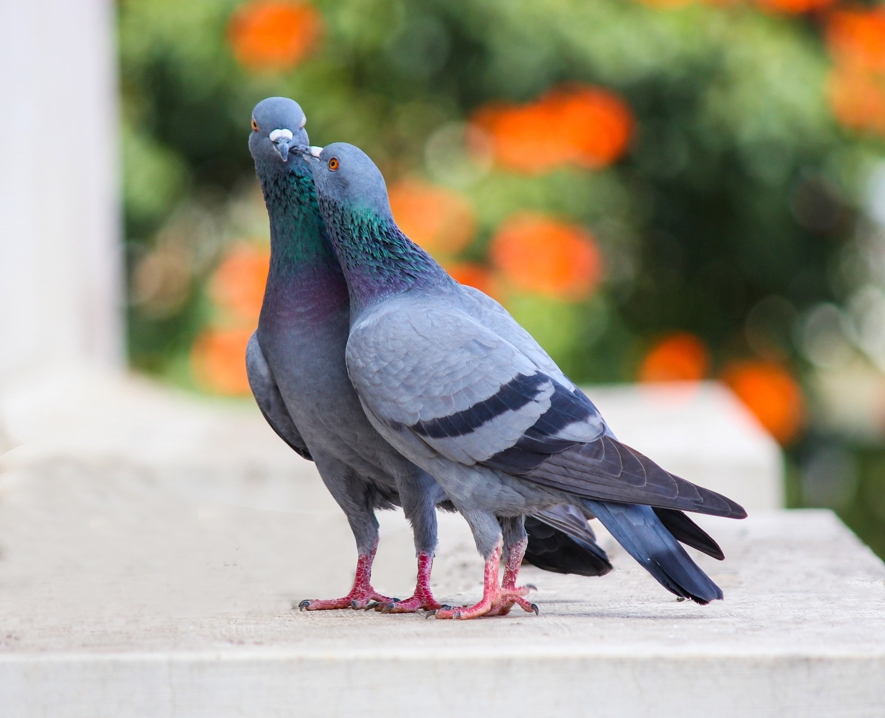
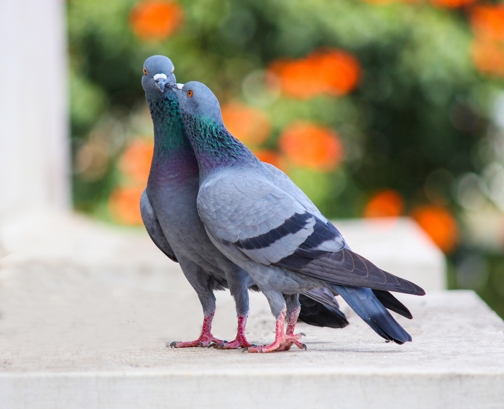

1
1

Animals (also called Metazoa) are multicellular, eukaryotic organisms in the biological kingdom Animalia.With few exceptions, animals consume organic material, breathe oxygen, are able to move, can reproduce sexually, and go through an ontogenetic stage in which their body consists of a hollow sphere of cells, the blastula, during embryonic development. Over 1.5 million living animal species have been described—of which around 1 million are insects—but it has been estimated there are over 7 million animal species in total. Animals range in length from 8.5 micrometres (0.00033 in) to 33.6 metres (110 ft). They have complex interactions with each other and their environments, forming intricate food webs. The scientific study of animals is known as zoology.
1
Birds are kind of organisms that are made of feathers to cover their body, hollow bones and wings to fly. These birds are made of beak, claws and usually prey on insects, fish and also on the meat of other organisms.
Birds are of different species, some are insect eating birds which are very small in size and some are fish eating, meat eating birds each bird is classified based on their feet arrangement, wings, their habitat and also on the way they walk.


 
